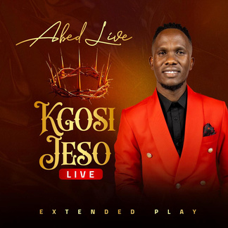
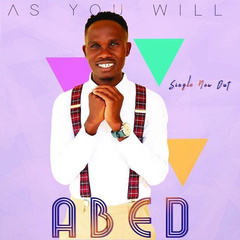
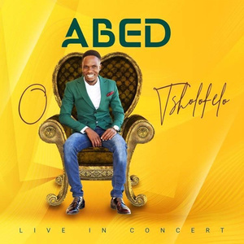
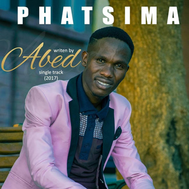
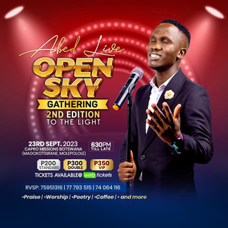
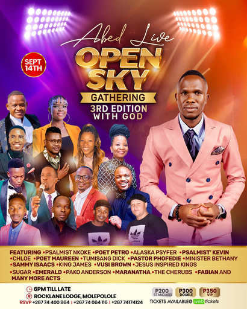
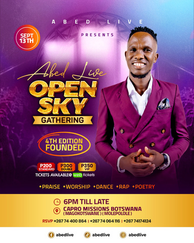

Abednico Wadingalo is a singer, songwriter and recording artist whose music blends Contemporary Gospel, Afro-Jazz, Praise and Worship. Born 16 February 1994 and based in Molepolole, his sound is rooted in faith, joy and the transformative power of salvation. A self-taught musician and director of Abed Live, he approaches his craft with a deep sense of purpose, infusing his performances with an uplifting energy that resonates with audiences.
Beyond music, Abed is a Real Estate Surveyor with a focus on Sustainable Development, embodying a balance between profession and passion. His work extends to vocal training through Transformative Drive, event management with Open Sky Gathering and the Abed Live Moments podcast series.




Abed’s own gathering — four editions of praise, worship, poetry and coffee under an open sky in Molepolole.



Focused on Sustainable Development — a balance between profession and passion.
Coaching voices to sing with intention, technique and conviction.
Conversations from behind the music — process, faith and the road.

A singer, songwriter and recording artist whose music blends Contemporary Gospel, Afro-Jazz, Praise and Worship. Born 16 February 1994 and based in Molepolole, his sound is rooted in faith, joy and the transformative power of salvation.
A self-taught musician and director of Abed Live, he approaches his craft with a deep sense of purpose — and carries it beyond the stage as a Real Estate Surveyor focused on Sustainable Development, a vocal coach through Transformative Drive, and host of the Abed Live Moments podcast.
Sustainable Development — a balance between profession and passion.
Coaching voices to sing with intention, technique and conviction.
Conversations from behind the music — process, faith and the road.
Try next: “build out 1a as a real scrolling site” · “keep 1b’s gold but use 1a’s type” · “add a shows / tickets page”